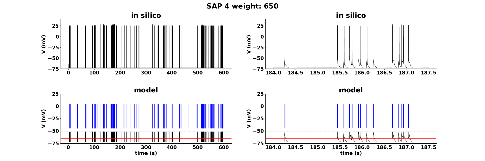

NEST patch and python files for the model: A. Marascoa, C. Tribuzi, C. A. Lupascu and M. Migliore. Modeling realistic synaptic inputs of CA1 hippocampal pyramidal neurons and interneurons via Adaptive Generalized Leaky Integrate-and-Fire models.
In this study we propose an Adaptive GLIF (A-GLIF) approach that can reproduce experimental findings under variable currents by incorporating a new set of update rules. The extended A-GLIF model successfully reproduces both constant and variable current inputs, and it was validated against the results obtained using a biophysical accurate model neuron. This enhancement provides researchers with a tool to optimize spiking neuron models using classic experimental traces under constant current injections, reliably predicting responses to synaptic inputs, which can be confidently used for large-scale network implementations.
In order to reproduce Fig. 8 of the paper run first
python AGLIF_synaptic.py
in order to get the following files
6_065_voltage_simulated.txt
6_065_t_spk_simulated.txt
and then run
python figure8.py
The script will produce the following image

Under Ubuntu unix systems:
install cmake and build-essential:
sudo apt install cmake
sudo apt-get install build-essential
install anaconda3 following instructions from:
...
Create a Conda Enviroment following instructions at https://github.com/nest/nest-simulator/blob/master/environment.yml OR
Questions on how to use this model
should be directed to michele.migliore at cnr.it
Questions on how to modifiy or run this
model should be addressed to smgsolinas at uniss.it
Curator's Note (2024-05-05):
Depending on where you downloaded this from, you may find two zip files
in the marasco_etal folder and one at the top level.
If so, these should be expanded before running the code.